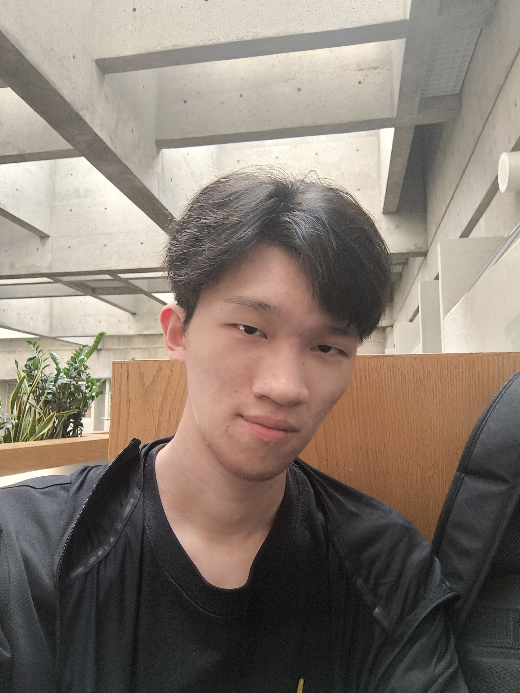

01 · Restaurant website
Yunshang Rice Noodle
A responsive restaurant website shaped around brand storytelling, menu discovery, locations, and online ordering.
Visit live siteInformation Technology · York University
I am Songang Li, an Information Technology student in Toronto. My work spans responsive websites, interface design, desktop tools, and game modifications.

How I work
I learn by building, testing, and refining practical ideas until the interface feels understandable and the product does what it promises.
Selected work
A selection of commercial web work and independent software projects, with fuller context available in the project archive.
Open project archive
01 · Restaurant website
A responsive restaurant website shaped around brand storytelling, menu discovery, locations, and online ordering.
Visit live site
02 · Entertainment landing page
A cinematic, full-page landing experience using strong scene changes, typography, and motion-led visual direction.
View my version
03 · Game interface modification
An information-dense navigation and telemetry interface designed for Space Engineers. The development repository is currently private.
Public release plannedCurrently learning